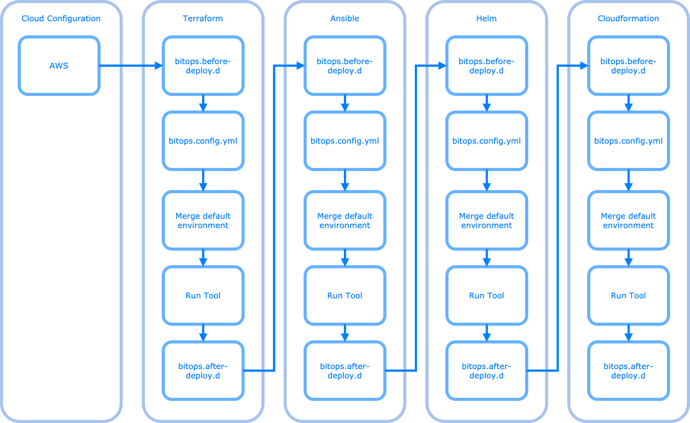

Execution Lifecycle#
Lifecycle hooks#
Within each tool directory, you can optionally have a bitops.before-deploy.d/ and/or a bitops.after-deploy.d/. If any shell scripts exist within these directories, BitOps will execute them in alphanumeric order.
This is a useful way to extend the functionality of BitOps. A popular use case we've seen is loading secrets, preparing the environment or dynamically editing bitops.config.yaml.
Detailed Execution Flow#

Main Execution Flow#
A single run of BitOps will:
- Copy the contents of
/opt/bitops_deploymentto a temporary working directory - Attempt to setup a cloud provider
- If a
terraform/directory exists within the selected environment:- Run any
bitops.before-deploy.d/*.shscripts - Load
bitops.config.yamland set environment - Merge contents with Default environment - TODO
- Select terraform version
- Run
terraform init - Select
terraform workspace - Run
terraform plan - Run
terraform applyorterraform destroy - Run any
bitops.after-deploy.d/*.shscripts
- Run any
- If a
ansible/directory exists within the selected environment:- Run any
bitops.before-deploy.d/*.shscripts - Load
bitops.config.yamland set environment - Merge contents with Default environment - TODO
- Run
ansible-playbook playbook.yamlin$env/ansible/ - Run any
bitops.after-deploy.d/*.shscripts
- Run any
- If a
helm/directory exists within the selected environment:- Run the following for
$env/helm/$ENVIRONMENT_HELM_SUBDIRECTORY/or for all charts in$env/helm/- Run any
bitops.before-deploy.d/*.shscripts - Load
bitops.config.yamland set environment - Merge contents with Default environment
- Use
$KUBE_CONFIG_PATHif defined, if not use AWS CLI to build.kubeconfig - Gather all values files - TODO document
- Run
helm dep up - Run
helm upgradeorhelm install - Run
helm rollbackon failure - Run any
bitops.after-deploy.d/*.shscripts - TODO
helm_install_external_chartsandhelm_install_charts_from_s3never run!
- Run any
- Run the following for
- If a
cloudformation/directory exists within the selected environment:- Run any
bitops.before-deploy.d/*.shscripts - Load
bitops.config.yamland set environment - Merge contents with Default environment - TODO
- Run cfn template validation
- Create or delete cfn stack. Wait for completion
- Run any
bitops.after-deploy.d/*.shscripts
- Run any
Imported Environment Variables#
The plugin config values and defaults are overriden by user environment variables passed to BitOps by prefixing them with BITOPS_. For example, BITOPS_ANSIBLE_SKIP_TAGS=tag1,tag2 will set the plugin's config ansible.cli.skip-tags value to tag1,tag2.
See Environemnt Variables Defaulting for more information.
Exported Environment Variables#
BitOps exports the environment variables to the plugin when a ENV var name is specified in bitops.schema.yaml via export_env. This is useful for passing values to lifecycle hooks, custom scripts, or directly to the plugin executable.